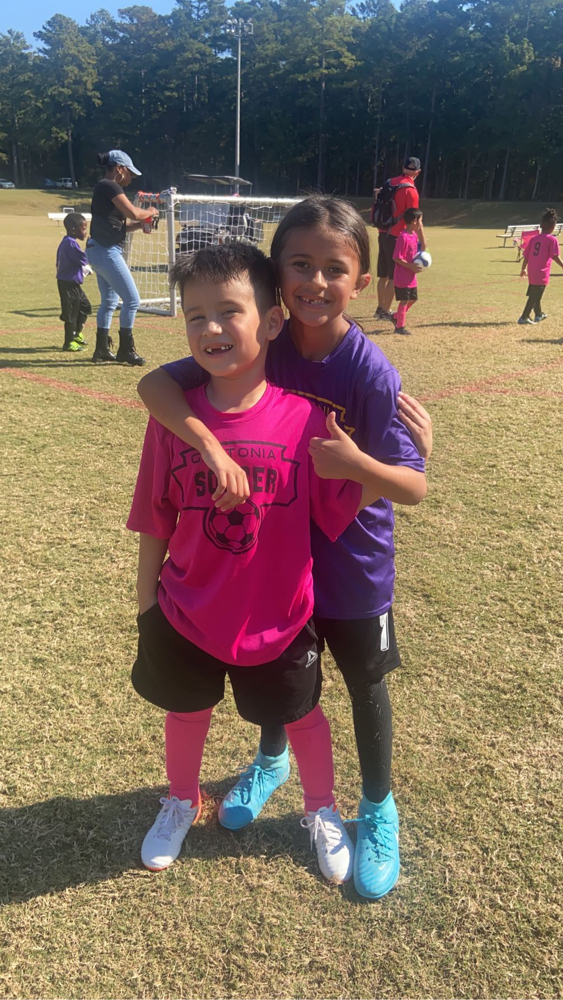
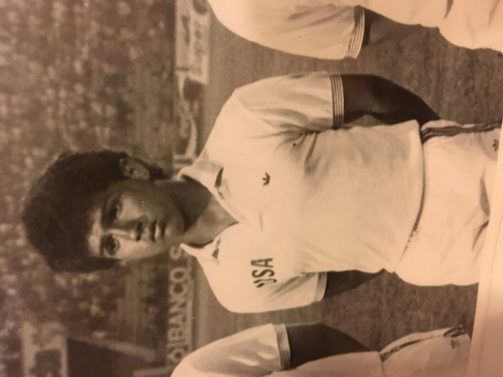
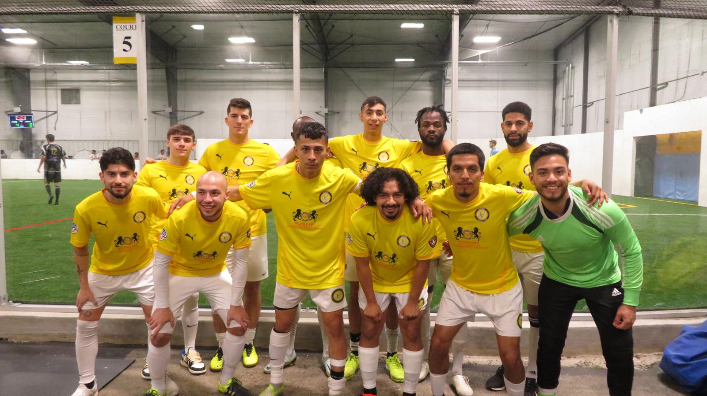

Welcome to Soccer Enthusiast
Here we talk about the beauty of soccer and my experience with the sport. You do not have to just play soccer to be involved, and that is what is so great about the sport.
About Us
My father is what got me started in soccer. He was a professional player for USA, so there was a lot of expectation for me. Both my sisters went onto become accoplished athletes, with one playing college soccer, and the other winning a marathon at a very young age. I've played Varisty HS, club, ODP, College, and Semi-Professional Soccer.
Soccer Schedule
The best times to watch and play soccer can vary depending on personal preferences and local climate conditions. Generally, soccer matches are popular during the late spring, summer, and early fall when the weather is conducive to playing and watching outdoor sports. In Europe, the soccer season typically runs from August to May with peak viewing times on weekends and weekday evenings to accommodate work schedules. For playing soccer, mornings or late afternoons are ideal as they avoid the peak sun hours, reducing the risk of overheating and dehydration. For spectators, prime times are usually during major tournaments like the FIFA World Cup, UEFA Champions League, and national league games, where matches are often scheduled on weekends or midweek evenings. In regions with harsh winters, indoor leagues offer an alternative, with games played throughout the year. Watching soccer also peaks during these tournaments, with fans tuning in from all over the world at various times depending on their time zone.
Best Locations
Top places to play or watch soccer.
- Barcelona, Spain - Home to Camp Nou, the largest stadium in Europe, and the legendary FC Barcelona. Watching a match here is a pilgrimage for many soccer fans.
- Buenos Aires, Argentina - Known for its passionate soccer culture. The city is home to historic clubs like Boca Juniors and River Plate, with their iconic stadiums La Bombonera and El Monumental.
- Milan, Italy - The San Siro Stadium hosts two of Italy's biggest clubs, AC Milan and Inter Milan. It is an iconic venue in European soccer.
- Manchester, England - Home to Manchester United's Old Trafford and Manchester City's Etihad Stadium, offering top-tier Premier League soccer.
How To Play Soccer
Detailed guide on playing soccer for beginners.

Why Soccer?
The reasons why soccer is the world's most popular sport.

Page Built by Brandon A. Designs © 2024, Certified in Responsive Web Design